Recording Best Practices
Prior to recording:
- Set up any data you will need beforehand (records that need to be generated, settings that need configuration, etc...) and practice going through the actions and screens that will appear in the video. This will help you with timing when recording.
- Set the screen capture dimensions to match the dimensions of the program you are filming. You may need to film your full screen to show traveling to a specific URL - select a specific screen instead of Region to do this.
- Keep your screens clear of any windows besides your script, Camtasia, and the software application you are documenting.
- Silence notifications.
You can record documentation videos directly from Camtasia. Start with downloading the Camtasia Demo Template and follow the instructions below. If you have not already downloaded and installed the Camtasia program, do so now.
Using the Template
| Instruction | Screenshot |
|---|---|
| 1. Open your downloads folder and right click the zipped template folder, named camtasia-demo-template-folder.tscproj.zip. | 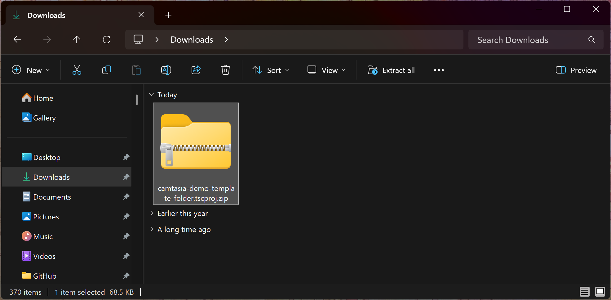 |
| 2. Select Extract All. | 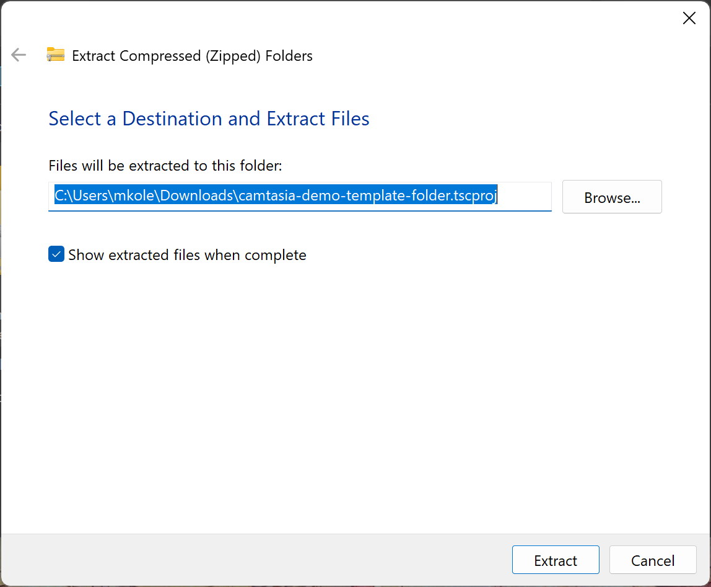 |
| 3. Select Browse and go to OS (C:) > Users > [your username] and create or select a folder to house your Camtasia projects. Note: if you save active Camtasia files to cloud storage instead of the C drive, it can cause file syncing issues. It is recommended to only move Camtasia files to cloud storage when they are no longer being edited. | 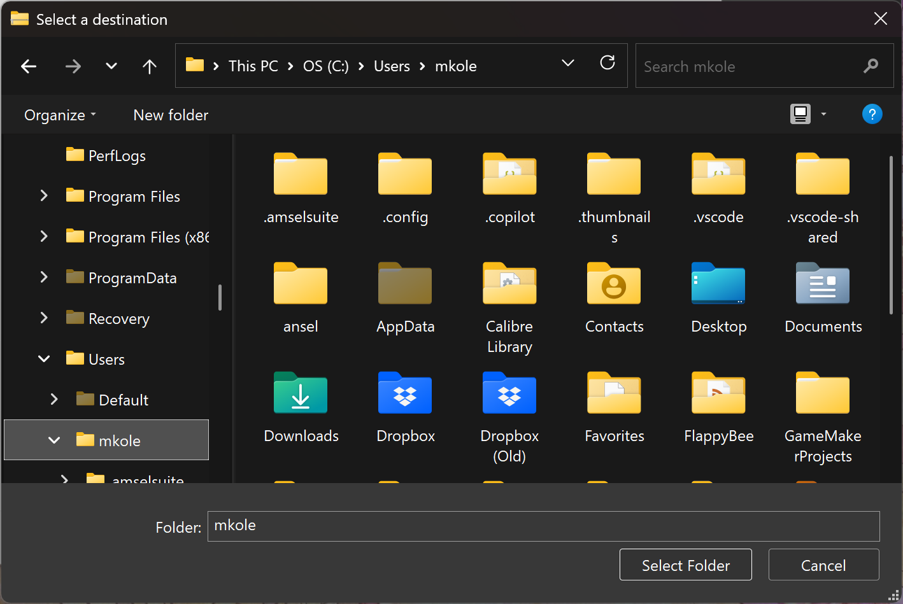 |
| 4. Select Select Folder. | 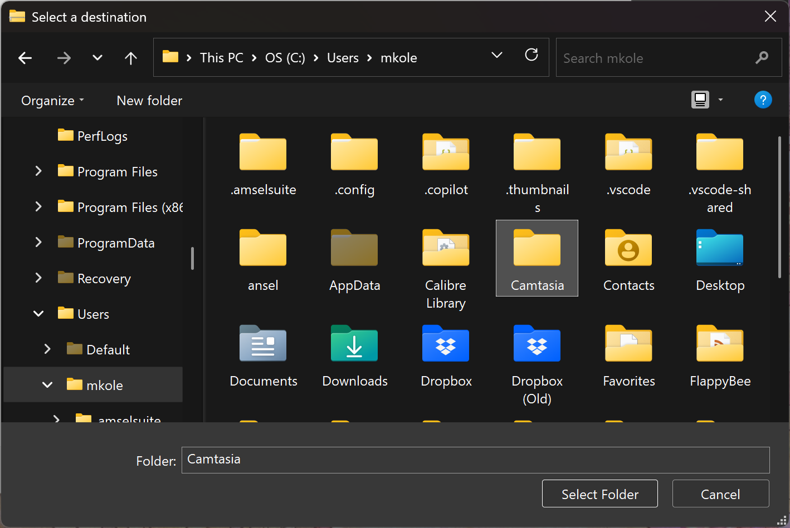 |
| 5. Select Extract. | 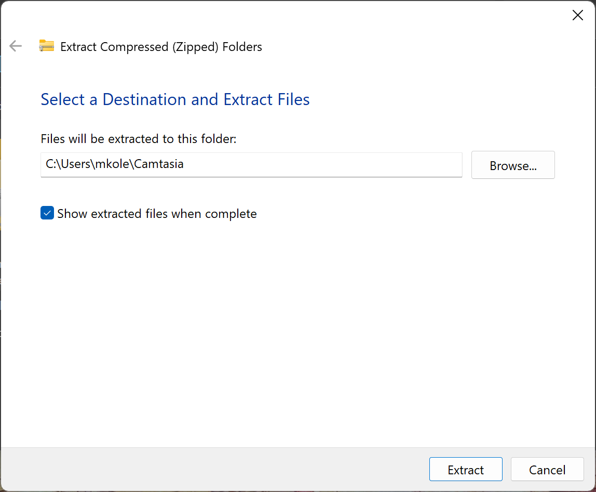 |
| 6. Open Camtasia and select Open Project. | 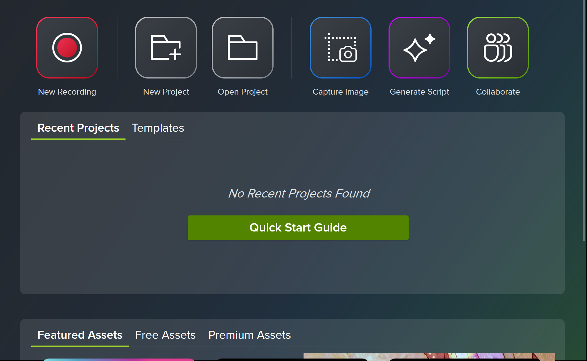 |
| 7. Open camtasia-demo-template-folder.tscproj.zip and select template-file.tscproj. | 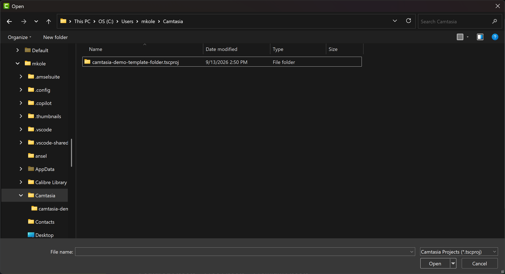 |
| 8. Select Open. | 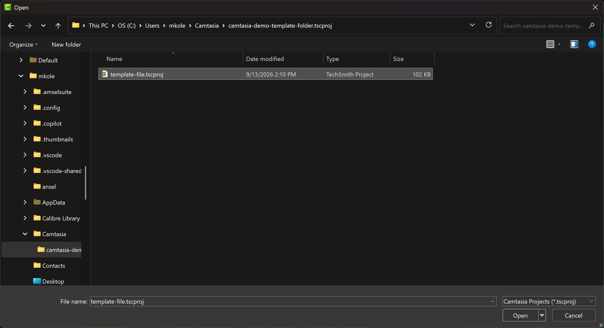 |
Recording in Camtasia
| Instruction | Screenshot |
|---|---|
| 1. Create a new project using this template by selecting File > Save As… and entering the name of your video. Make sure you are in the folder OS (C:) > Users > [your username] > Documents, not the template folder, and select Save. | 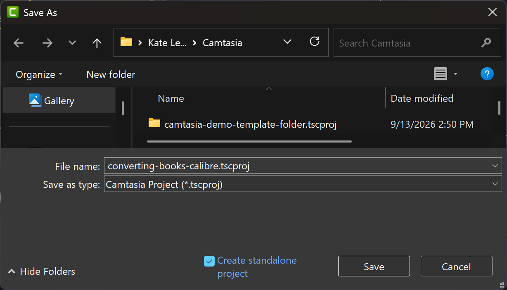 |
| 2. Select OK on the Camtasia project saved popup message. | 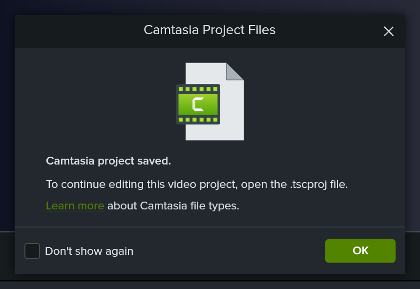 |
| 3. Select Record. | 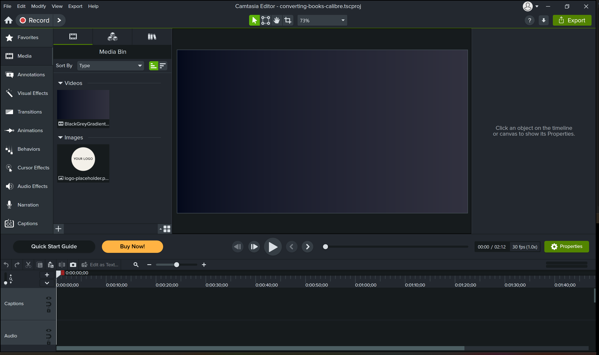 |
| 4. Move the Recorder toolbar to a different screen from the screen you want to record and adjust the capture box if necessary. To adjust the Capture Window, select the dropdown on the setting with a screen preview and set it to Region. Then, adjust the dimensions on the green-dotted square that appears to set the edges of your screen capture. | 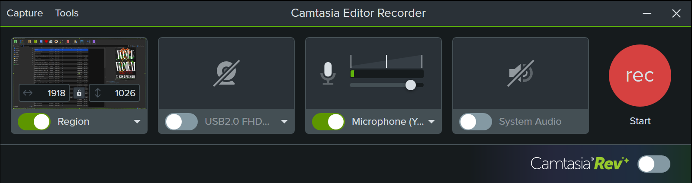 |
| 5. On the Recorder toolbar, make sure Capture Window (the first setting) dimensions are set to capture everything you need to record and Microphone is turned on. USB Camera, Camtasia Rev, and System Audio should be turned off. | |
| 6. Select Start and begin following the actions in your script while reading the script aloud. Note: You will record a voiceover later, so you do not need to read the script perfectly while screen recording. For now, focus on timing the actions on screen and cleanly moving the cursor. If it is easier, you can abandon reading the script altogether and simply adjust the video timing during editing, although this takes some practice to get right. If you make a mistake and want to start over, select the Reset symbol on the Recorder toolbar. When you have reached the end of the script, select Stop or press F10 on your keyboard. | 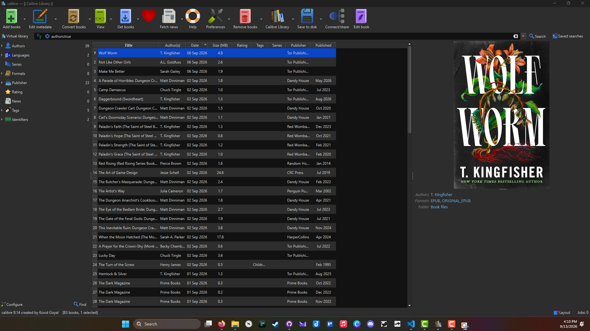 |
| 7. You will return to the Camtasia editor, and your video will appear in the Media Bin under Screen Recordings. | 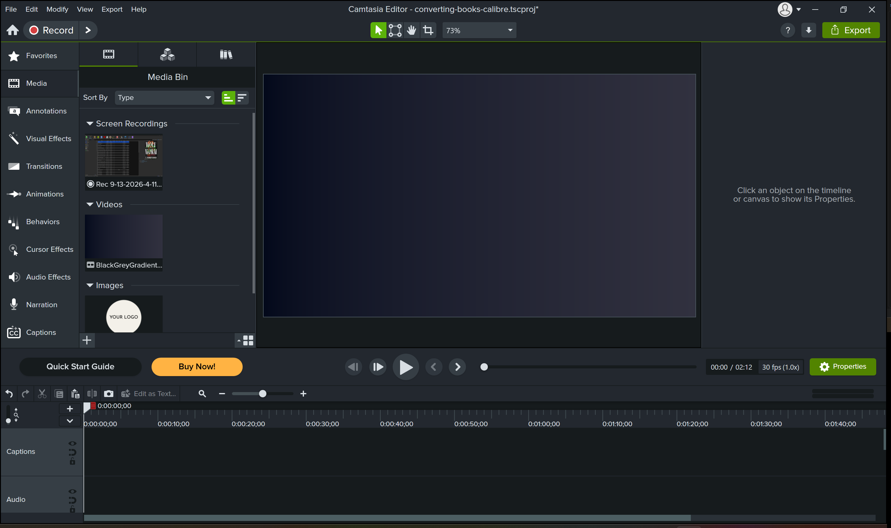 |
| 8. Drag and drop the recording to the video timeline, then save your progress. |  |